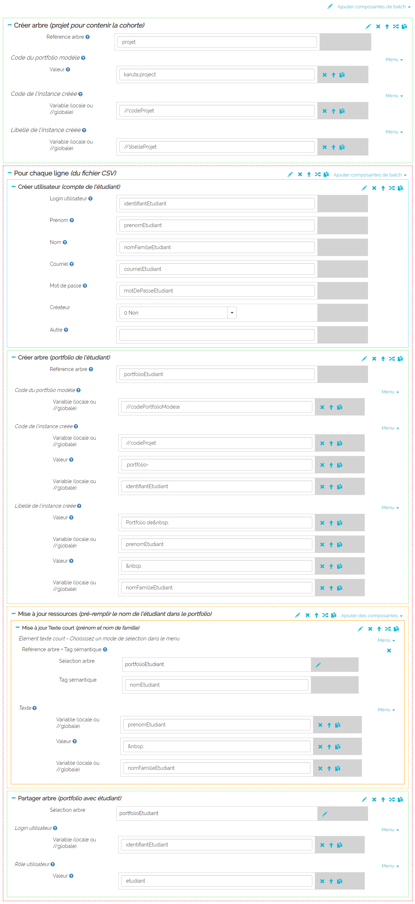
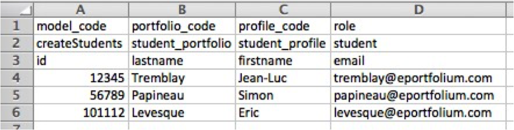

ForEachLine
ForEachLine est une boucle. Les commandes du ForEachLine seront exécutées pour chaque ligne du Fichier CSV.
Les commandes Batch permettent d'automatiser la création, modification et suppression de portfolios ainsi que la création ou suppresion d'usagers.

À partir d'un ou plusieurs modèles de portfolios, d'un script batch et d'un fichier CSV, KARUTA va créer les usagers et leurs portfolios associés.
Exemple de script
Pour chaque ligne
Exemple de fichier CSV
Le fichier contient les informations nécessaires à l'éxécution du batch.
Ligne 1 : Ce sont les noms des variables 'globales', c'est à dire les variables qui ont les même valeurs pour toutes les lignes. model_code est un nom réservé. C'est le code du batch à exécuter. Dans le batch les références au variables globales seront précédées de //
Ligne 2 : Ce sont respectivement les valeurs des variables globales. Dans l'exemple présenté la valeur de model_code est createStudents
Ligne 3 : Ce sont les noms des variables 'locales', c'est à dire les variables qui ont des valeurs différentes pour chaque ligne.
Ligne 4 et + : Ce sont respectivement les valeurs des variables locales.
ForEachLine est une boucle. Les commandes du ForEachLine seront exécutées pour chaque ligne du Fichier CSV.
La commande crée un usager avec les informations fournies dans les champs de la commande.
Identifiant
Prénom
Nom
Courriel
Mot de passe
Créateur?
La commande permet de supprimer un usager
Identifiant
La commande permet de mettre un usager daans un groupe d'usager
Personne Il faut ajouter un select pour une variable ou value pour spécifier directement une valeur
Groupe Il faut ajouter un select pour une variable ou value pour spécifier directement une valeur
Personne Il faut ajouter un select pour une variable ou value pour spécifier directement une valeur
Groupe Il faut ajouter un select pour une variable ou value pour spécifier directement une valeur
La commande permet de créer un portfolio à partir d'un modèle de portfolio et de précider le code et le libellé du portfolio qui sera créé.
IDl'ID est utilisé, dans les commandes nécessitant la sélection d'un arbre, pour faire référence à ce portfolio, par exemple, pour le partager avec un usager.
Modèle Il faut ajouter un select pour une variable et/ou value pour spécifier directement une valeur
Code Il faut ajouter un select pour une variable et/ou value pour spécifier directement une valeur
Libellé Il faut ajouter un select pour une variable et/ou value pour spécifier directement une valeur
La commande permet de partager un portfolio avec un usager dans un rôle donné.
Sélection arbre permet de sélectionner l'id du portfolio concerné par le partage.
Personne Il faut ajouter un select pour une variable ou value pour spécifier directement une valeur
Rôle Il faut ajouter un select pour une variable ou value pour spécifier directement une valeur
La commande permet de sélectionner un portfolio qui sera référencé dans d'autres commandes.
Code Il faut ajouter un select pour une variable et/ou value pour spécifier directement une valeur
La commande permet de supprimer un portfolio.
Code Il faut ajouter un select pour une variable et/ou value pour spécifier directement une valeur
La commande permet d'ajouter un portfolio à un groupe de portfolios.
Sélection arbre permet de sélectionner l'id du portfolio concerné par le partage.
Groupe Il faut ajouter un select pour une variable ou value pour spécifier directement une valeur
La commande permet de partager un portfolio avec un groupe d'usagers avec un rôle donné.
Sélection arbre permet de sélectionner l'id du portfolio concerné par le partage.
Groupe Il faut ajouter un select pour une variable ou value pour spécifier directement une valeur
Rôle Il faut ajouter un select pour une variable ou value pour spécifier directement une valeur
La commande permet de partager un portfolio avec un groupe d'usagers avec un rôle donné.
Sélection arbre permet de sélectionner l'id du portfolio concerné par le partage.
Groupe Il faut ajouter un select pour une variable ou value pour spécifier directement une valeur
Rôle Il faut ajouter un select pour une variable ou value pour spécifier directement une valeur
La commande permet d'importer un ou des éléments dans un portfolio.
Sélection destination C'est la section, page ou sous-section dans laquelle on veut importer. Format : ID.tag_sémantique. ID est une rérence à un portfolio créé ou sélectionné précedemment.
Sélection source C'est la partie que l'on veut importer dans le portfolio. Format : code_portfolio.tag_sémantique.
La commande permet d'importer un ou des éléments dans un portfolio.
Sélection C'est le noeud que l'on veut déplacer. Format : ID.tag_sémantique. ID est une rérence à un portfolio créé ou sélectionné précedemment.
La commande permet de mettre à jour un champ de type texte court.
Sélection C'est le noeud que l'on veut mettre à jour. Format : ID.tag_sémantique. ID est une rérence à un portfolio créé ou sélectionné précedemment.
Valeur du champ Cela peut-être soit une valeur (value) et/ou une variable (select) soit une référence à un noeud source (SourceSelect - Format : code_portfolio.tag_sémantique)
La commande permet de mettre à jour un proxy.
Sélection proxy C'est le noeud proxy que l'on veut mettre à jour. Format : ID.tag_sémantique. ID est une rérence à un portfolio créé ou sélectionné précedemment.
Sélection source C'est le noeud vers lequel pointe le proxy. Format : code_portfolio.tag_sémantique.
La commande permet de mettre à jour l'uuid d'un tableau de bord.
Sélection C'est le noeud proxy que l'on veut mettre à jour. Format : ID.tag_sémantique. ID est une rérence à un portfolio créé ou sélectionné précedemment.
Dashboard uuid Cela peut-être soit une valeur (value) et/ou une variable (select) soit une référence à un noeud source (SourceSelect - Format : ID.UUDI où ID est une réfrence à un portfolio déjà créé ou sélectionné et UUID est un mot réservé. La valeur est alors l'uuid du porfolio ID)
La commande permet de mettre à jour le code et le libellé d'un portfolio.
Ancien code Il faut ajouter un select pour une variable et/ou value pour spécifier directement une valeur
Nouveau code Il faut ajouter un select pour une variable et/ou value pour spécifier directement une valeur
Libellé Il faut ajouter un select pour une variable et/ou value pour spécifier directement une valeur
La commande permet de mettre à jour l'attribut recherche (query) d'un noeud.
Sélection C'est le noeud que l'on veut mettre à jour. Format : ID.tag_sémantique. ID est une rérence à un portfolio créé ou sélectionné précedemment.
Valeur query Il faut ajouter un select pour une variable et/ou value pour spécifier directement une valeur
La commande permet de mettre à jour l'attribut menu d'un noeud.
Sélection C'est le noeud que l'on veut mettre à jour. Format : ID.tag_sémantique. ID est une rérence à un portfolio créé ou sélectionné précedemment.
Valeur menu Il faut ajouter un select pour une variable et/ou value pour spécifier directement une valeur
La commande permet de mettre à jour l'attribut édition en ligne (inline) d'un noeud.
Sélection C'est le noeud que l'on veut mettre à jour. Format : ID.tag_sémantique. ID est une rérence à un portfolio créé ou sélectionné précedemment.
Valeur inline (Y ou N) Il faut ajouter un select pour une variable et/ou value pour spécifier directement une valeur
La commande est plus générale que les précédentes et permet de mettre à jour n'importe quel attribut de metadata d'un noeud.
Sélection C'est le noeud que l'on veut mettre à jour. Format : ID.tag_sémantique. ID est une rérence à un portfolio créé ou sélectionné précedemment.
attribut C'est le nom de l'attibut à mettre à jour.
Valeur atttribut Il faut ajouter un select pour une variable et/ou value pour spécifier directement une valeur
La commande est plus générale que les précédentes et permet de mettre à jour n'importe quel attribut de metadataWad d'un noeud.
Sélection C'est le noeud que l'on veut mettre à jour. Format : ID.tag_sémantique. ID est une rérence à un portfolio créé ou sélectionné précedemment.
attribut C'est le nom de l'attibut à mettre à jour.
Valeur atttribut Il faut ajouter un select pour une variable et/ou value pour spécifier directement une valeur